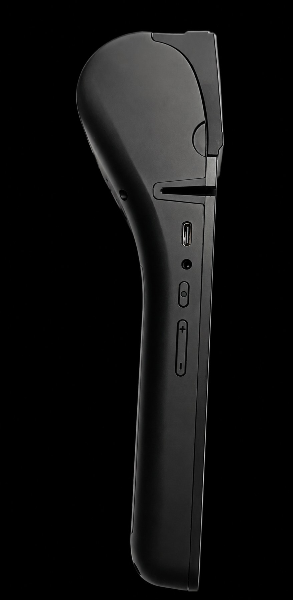
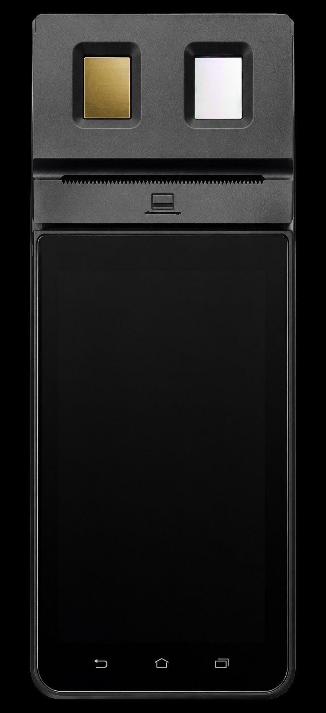

Home / Our Solutions
The Raven platform
One device, built for every sector that needs secure verification
The Waxd Raven is a hardware and cloud-based digital transaction solution designed to facilitate secure and accessible digital transactions. The system uses dual biometric authentication, incorporating both fingerprint and facial recognition.
Why it works everywhere
Built for environments where connectivity may be limited
Waxd's solutions are designed to support users and businesses in environments where access to reliable data connectivity and digital infrastructure may be limited.
The solutions can support applications across areas such as financial services and payments, transportation, healthcare, education, government services, and other sectors requiring secure digital transactions.

Financial services & payments
Secure verification at the point of transaction
The Waxd Raven is a hardware and cloud-based digital transaction solution designed to facilitate secure and accessible digital transactions for banks, payment providers and financial services organisations. Dual biometric authentication, incorporating both fingerprint and facial recognition, confirms identity before a transaction is processed.
Talk to us about payments
Transportation
Verified transactions across transport networks
Raven's hardware and cloud-based platform supports secure and accessible digital transactions for transport operators, with dual biometric authentication built to keep working reliably in environments where data connectivity and digital infrastructure may be limited.
Talk to us about transportationHealthcare
Reliable identity verification for patients and providers
Dual biometric authentication, incorporating both fingerprint and facial recognition, gives healthcare providers a secure and accessible way to verify identity, supporting applications such as patient records, service delivery and programme enrolment in environments where reliable data connectivity and digital infrastructure may be limited.
Talk to us about healthcareEducation
Secure verification for institutions and learners
Waxd's solutions are designed to support users and businesses in environments where access to reliable data connectivity and digital infrastructure may be limited, giving educational institutions a secure and accessible way to verify identity for enrolment, examinations and disbursement of support.
Talk to us about educationGovernment services
Secure digital transactions for public service delivery
The Waxd Raven is a hardware and cloud-based digital transaction solution designed to facilitate secure and accessible digital transactions for government services and other sectors requiring secure digital transactions, with dual biometric authentication incorporating both fingerprint and facial recognition.
Talk to us about government servicesDon't see your sector?